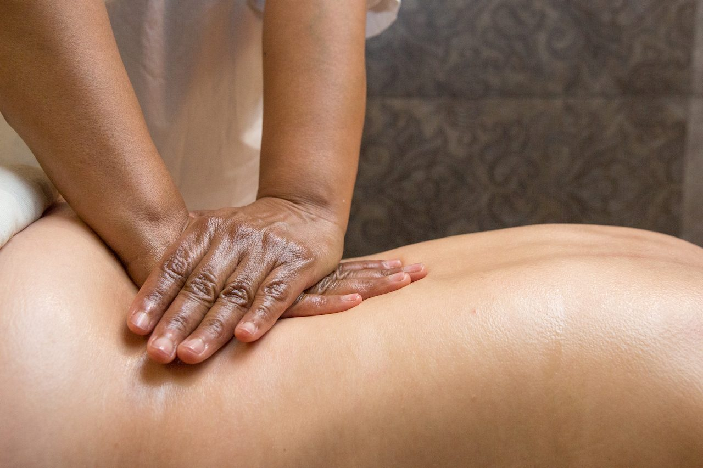

01 · à la séance
Soins à la séance
Massages ayurvédiques Abhyanga et Udvartana, Shirodhara, travail des Marmas, Shirochampi, massage au bol Kansu, Chi Nei Tsang, Tissue Balancing, soins esséniens et énergétiques, massage de la femme enceinte… Chaque séance est adaptée à vos besoins du moment.
Découvrir tous les soins →